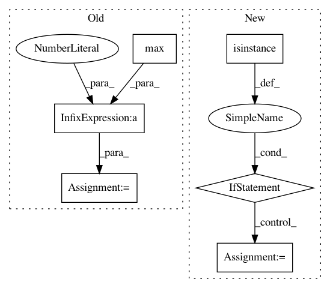

6ae8c5f4bcf78256d15adbc9091cd8701de478cf,ggplot/geoms/geom_abline.py,geom_abline,plot_layer,#geom_abline#Any#,8
Before Change
intercept = layer.pop("intercept")
else:
intercept = 0.0
step = (np.max(x) - np.min(x)) / 100.0
x_rng = np.arange(np.min(x), np.max(x), step)
y_rng = x_rng * slope + intercept
plt.plot(x_rng, y_rng, **layer)
After Change
intercept = layer.pop("intercept")
else:
intercept = 0.0
if isinstance(x[0], Timestamp):
gca = plt.gca()
gca.set_autoscale_on(False)
gca.plot(gca.get_xlim(),gca.get_ylim())
else:
start, stop = np.max(x), np.min(x)
step = ((stop-start)) / 100.0
x_rng = np.arange(start, stop, step)
y_rng = x_rng * slope + intercept
plt.plot(x_rng, y_rng, **layer)
In pattern: SUPERPATTERN
Frequency: 3
Non-data size: 6
Instances
Project Name: has2k1/plotnine
Commit Name: 6ae8c5f4bcf78256d15adbc9091cd8701de478cf
Time: 2013-10-11
Author: austinogilvie@gmail.com
File Name: ggplot/geoms/geom_abline.py
Class Name: geom_abline
Method Name: plot_layer
Project Name: matplotlib/matplotlib
Commit Name: 34b8eb46e5de6b760bc131e461755042716e259d
Time: 2018-02-07
Author: story645@gmail.com
File Name: lib/matplotlib/category.py
Class Name: UnitData
Method Name: update
Project Name: rusty1s/pytorch_geometric
Commit Name: 631d4ee2ece28da70d6e22201129f39b4f1dc586
Time: 2020-10-26
Author: matthias.fey@tu-dortmund.de
File Name: torch_geometric/data/temporal.py
Class Name: TemporalData
Method Name: __getitem__